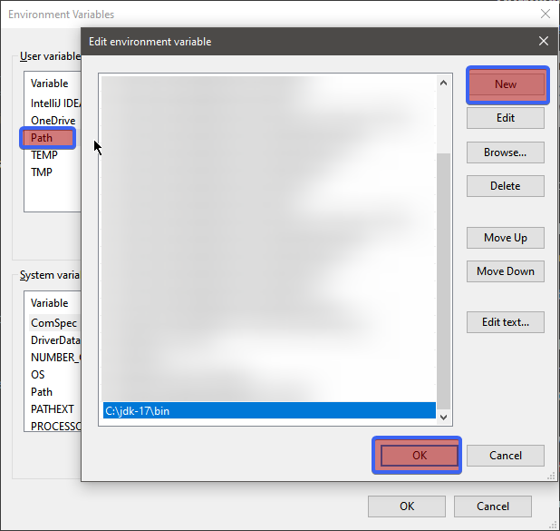

Run Jython Standalone Jar On Windows
Run Jython Standalone Jar On Windows
This tutorial will show you how you can run jython-standalone.2.7.2.jar on a Windows machine.
Using Jython standalone, you will be able to execute Python scripts, or use Python REPL.
Pip install for Jython is not covered.
Prerequisites:
- Basic knowlege of Windows PowerShell
Guide outline
- Install OpenJDK 17
- Download Jython.jar and Guide Stub
- Run Jython Standalone
- Summary
Install OpenJDK 17
Download Java
- Download Windows 10 x64 JDK
- From zip extract, jdk-17 folder to disk
C:\.
Absolute path to the JDK installation should be C:\jdk-17
Add Path Java variable
This part assumes you have installed OpenJDK in C:\jdk-17 folder.
- In Windows search type "Edit environment variables for your account"
- Double click [Path]
- Click [New]
- Enter this:
C:\jdk-17\bin; press Enter key - Click [OK] 
Verify Java Installation
In PowerShell run:
java -version
Assert Java version is correct:
openjdk version "17.0.1" 2021-10-19
OpenJDK Runtime Environment (build 17.0.1+12-39)
OpenJDK 64-Bit Server VM (build 17.0.1+12-39, mixed mode, sharing)
If you see OpenJDK 64-Bit Server VM your installation was successful.
Download Jython.jar and Guide Stub
This tutorial includes a zip file containing folder structure and a test script.
- Download the stub and extract it on your PC.
- Download jython-standalone.2.7.2.jar, and save it to
jythonstub/libfolder.
Run Jython Standalone
PowerShell commands below are executed in folder jythonstub/
Verify Jython Installation
Assert that Jython runs inside JRE:
java -jar ./lib/jython-standalone-2.7.2.jar --help
expected result:
usage: jython [option] ... [-c cmd | -m mod | file | -] [arg] ...
Options and arguments:
-B : don't write bytecode files on import
-c cmd : program passed in as string (terminates option list)
...
Run Jython REPL
Assert that Jython REPL is working:
java -jar ./lib/jython-standalone-2.7.2.jar
Expected result:
Jython 2.7.2 (v2.7.2:925a3cc3b49d, Mar 21 2020, 10:03:58) [OpenJDK 64-Bit Server VM (Oracle Corporation)] on java17.0.1 Type "help", "copyright", "credits" or "license" for more information. >>>
Run Jython Script
Assert that Jython script is working, th:
java -classpath ./lib/* org.python.util.jython ./hello_world.py
It should print:
PYTHON: Hello World!
JAVA: Hello World!
Command explanation:
java: Is OpenJDK, we installed.-classpath ./lib/*: tells your java runtime to scan all.jarfiles inside thelib/folder, i.e. makes them available for import inside Jython.org.python.util.jython: reverse URL notation to jython class containing amain()method(notice the class name is jython, not Jython)./hello_world.py: Name of the Jython script executed.
Summary
If you managed to run a Jython script using this guide, good news.
Now you have a clean environment to work on your Jython projects.
Do not forget to place additional jar files to the lib/ folder!